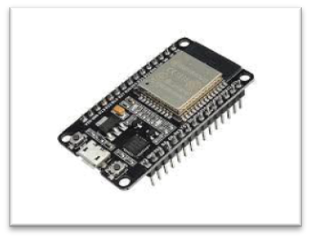
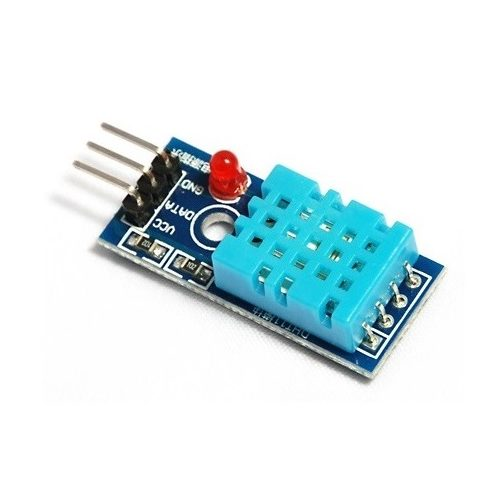
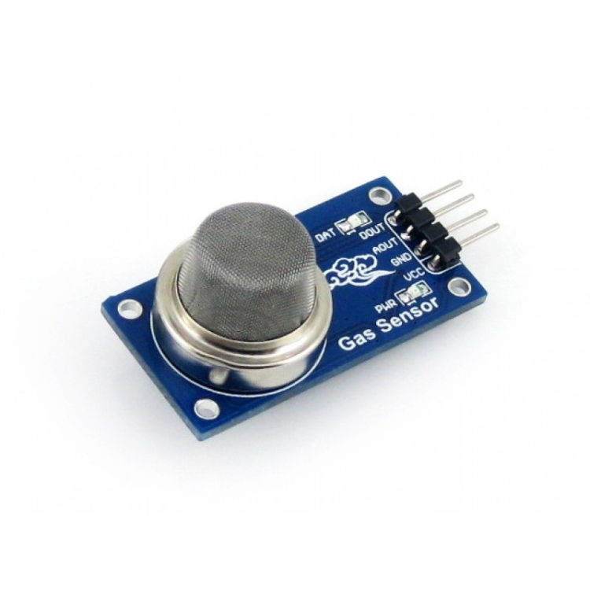
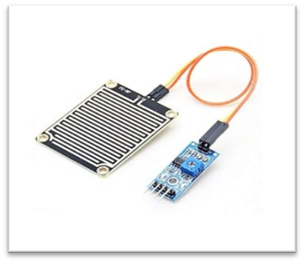
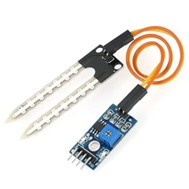

Bringing Intelligence to Environmental Monitoring
Welcome to our Smart Ecosystem Monitoring project. It leverages the power of IoT to create an intelligent solution for monitoring and managing diverse ecosystems. By deploying sensor nodes and utilizing real-time data analysis, it provides valuable insights for informed decisions in ecosystem conservation and sustainability.The proposed system employs a network of IoT devices strategically deployed within the ecosystem, equipped with sensors capable of collecting real-time data on various environmental parameters. By deploying sensor nodes in diverse ecosystems and utilizing real time data analysis and machine learning, it provides a comprehensive and user-friendly system for continuous ecosystem observation.
The versatile ESP32 microcontroller with Wi-Fi/Bluetooth capabilities serves as a cornerstone for various IoT projects.
The DHT11 is a digital sensor designed to provide real-time data on temperature and humidity. Employs a resistive-type humidity measurement component and a negative temperature coefficient (NTC) thermistor for accurate readings.
The MQ-135 gas sensor is used for air quality monitoring and safety equipment. The sensor operates on the principle of chemiresistance, where the electrical resistance changes in response to the concentration of the target gas.
A rain sensor detects the presence of rain or precipitation. It operates by measuring the electrical conductivity or capacitance of the sensor surface, is typically composed of a sensing element, often made of a hydrophilic material that attracts water.
A soil moisture sensor is used to measure the water content in the soil. Typically equipped with probes that are inserted into the soil, detects changes in electrical conductivity or resistance caused by variations in moisture levels.
The "Smart Ecosystem Monitoring" project utilizes an ESP32 microcontroller along with sensors including DHT11 (temperature and humidity), MQ135 (gas), a rain sensor, and a soil moisture sensor. A buzzer is incorporated for audible alerts.
- The ESP32 is programmed to establish a connection to the Blynk platform using its API and authentication token.
- The data collected from sensors is sent to the Blynk platform through the ESP32, providing insights into environmental conditions.
- Blynk can be configured to send alerts based on sensor data, enhancing the system's security features.
This circuit forms the basis of a versatile IoT project for environmental monitoring and security.
Output on serial monitor.
Result of the project in blynk app
In conclusion, the IoT-based "Smart Ecosystem Monitoring" project represents a comprehensive solution for environmental observation using the ESP32 microcontroller and various sensors. The integration with the Blynk platform allows for real-time monitoring and alerts, contributing to effective ecosystem management.This project serves as a testament to the potential of IoT technology to enhance our daily lives, whether in managing agricultural operations, conserving resources, or securing our homes. It offers a glimpse into the future, where data-driven decision-making and remote monitoring become the norm. As the Internet of Things continues to evolve, projects like this pave the way for innovative solutions that improve our quality of life.